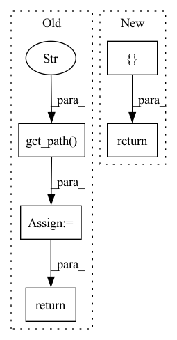

Pattern ID :8727

Before Change
pprint(metrics)
def list(self):
paths = [
self.get_path("ic.pkl"),
self.get_path("ric.pkl"),
self.get_path("long_pre.pkl"),
self.get_path("short_pre.pkl"),
self.get_path("long_short_r.pkl"),
self.get_path("long_avg_r.pkl"),
]
return paths
class SigAnaRecord(RecordTemp):
After Change
pprint(metrics)
def list(self):
return ["ic.pkl", "ric.pkl", "long_pre.pkl", "short_pre.pkl", "long_short_r.pkl", "long_avg_r.pkl"]
class SigAnaRecord(RecordTemp):
In pattern: SUPERPATTERN
Frequency: 3
Non-data size: 5
Instances
Fragment ID: 32377470
Project Name: microsoft/qlib
Commit Name: 3fa48d7017b94dab2c458131295d0da0a02a362f
Time: 2021-11-05
Author: afe.young@gmail.com
File Name: qlib/workflow/record_temp.py
M Class Name: HFSignalRecord
N Class Name: HFSignalRecord
M Method Name: list(1)
N Method Name: list(1)
M Parent Class: SignalRecord
N Parent Class: SignalRecord
M File Name: qlib/workflow/record_temp.py
N File Name: qlib/workflow/record_temp.py
M Start Line: 225
M End Line: 233
N Start Line: 255
N End Line: 255
'>
Before Change
logger.info("The evaluation results in SignalMseRecord is {:}".format(metrics))
def list(self):
paths = [self.get_path("mse.pkl"), self.get_path("rmse.pkl")]
return paths
After Change
logger.info("The evaluation results in SignalMseRecord is {:}".format(metrics))
def list(self):
return ["mse.pkl", "rmse.pkl"]
'>
Fragment ID: 32377468
Project Name: microsoft/qlib
Commit Name: 3fa48d7017b94dab2c458131295d0da0a02a362f
Time: 2021-11-05
Author: afe.young@gmail.com
File Name: qlib/contrib/workflow/record_temp.py
M Class Name: SignalMseRecord
N Class Name: SignalMseRecord
M Method Name: list(1)
N Method Name: list(1)
M Parent Class: RecordTemp
N Parent Class: RecordTemp
M File Name: qlib/contrib/workflow/record_temp.py
N File Name: qlib/contrib/workflow/record_temp.py
M Start Line: 86
M End Line: 87
N Start Line: 86
N End Line: 86
'>
Before Change
// backtest
par = PortAnaRecord(recorder, port_analysis_config)
par.generate()
analysis_df = par.load(par.get_path("port_analysis.pkl"))
print(analysis_df)
return analysis_df
class TestAllFlow(TestAutoData):
After Change
strategy = EnhancedIndexingStrategy()
dates = scores.index.get_level_values(0).unique()
alphas = []
current = pd.DataFrame()
gap_between_next_trade = 0
for date in tqdm(dates):
if gap_between_next_trade == 0:
score_series = scores.loc[date]
alpha, current = strategy.update(score_series, current, date)
alphas.append(alpha)
gap_between_next_trade = trade_gap
else:
gap_between_next_trade -= 1
alphas = np.array(alphas)
sharpe_ratio = alphas.mean() / np.std(alphas)
print("Sharpe:", sharpe_ratio)
return sharpe_ratio
class TestAllFlow(TestAutoData):
'>
Fragment ID: 32377464
Project Name: microsoft/qlib
Commit Name: 2bff6eb78120b8f3fc7aac12267d1e37c847ae0f
Time: 2021-03-04
Author: cy@unitive.tech
File Name: tests/test_enhanced_indexing.py
M Class Name: AnonimousClass
N Class Name: AnonimousClass
M Method Name: backtest_analysis(1)
N Method Name: backtest_analysis(2)
M Parent Class:
N Parent Class:
M File Name: tests/test_enhanced_indexing.py
N File Name: tests/test_enhanced_indexing.py
M Start Line: 136
M End Line: 158
N Start Line: 226
N End Line: 248